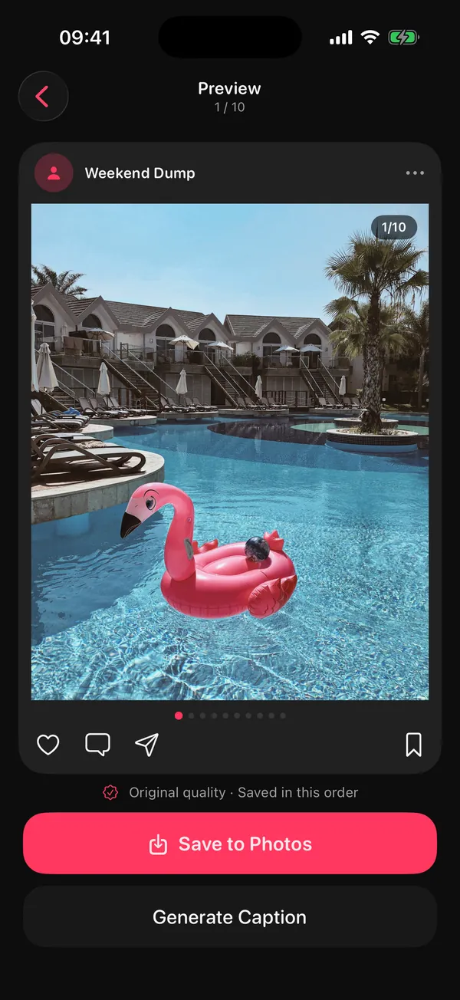
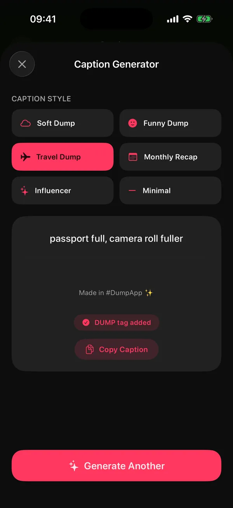

"Post consistently" is the most repeated advice in the creator world, and the most quietly ignored. Not because people are lazy. Because every post starts with a blank decision: what, from which photos, with which caption.
The Sunday Dump removes the decision. Same day, same format, same time box, every week. You stop inventing posts and start collecting them.
Why does a weekly series beat posting every day?
Because it turns posting into a habit with a fixed slot instead of a daily creative decision. One dependable post a week, made in a short time box, is easier to keep up than seven improvised ones, and it gives your followers something to expect.
Recurring series and batching come up in almost every piece of advice on posting without burning out. A photo dump is the perfect series format because the raw material already exists: you took the photos anyway. You only have to choose and order them.
It also scales down gracefully. A big week gets a ten-slide dump. A quiet week gets five honest slides. Both count.
What is a Sunday Dump?
A Sunday Dump is one carousel of your week, posted every Sunday: your best 8 to 10 shots from the last seven days, in order, with a short caption. Same day, same format, every week.
The rules are deliberately boring:
- Same day. Sunday (or any fixed day; the habit matters, not the name).
- Same window. Only the last seven days. No digging through last year.
- Same shape. 8 to 10 slides, a strong cover, time order after that.
- Same time box. Give it ten minutes. When the timer ends, post what you have.
- Optional tag. A recurring hashtag like #SundayDump helps people (and you) find the series later.
How do you run the Sunday Dump each week?
Shoot casually through the week and heart a photo or two a day. On Sunday, take the last seven days, keep 8 to 10 shots, fix the cover, add a one-line caption and post.
- MonA morning detail: coffee, light, the commute
- TueYour work or study spot
- WedOne person you saw today
- ThuSomething you ate
- FriWhere you went after work
- SatThe big moment, plus a short video
- SunCheck the draft, caption, post
The daily prompts are optional. They just make sure Sunday has more than eleven photos of your lunch.
- During the week: shoot, then heart. Take photos as normal. Tap the heart on one or two a day that you like. That's all the "work" before Sunday.
- Sunday: open your week. Look only at the last seven days (Favorites makes it faster).
- Choose 8 to 10. Strongest frame first, the rest in time order, a mix of people, places and details. The six picking rules help.
- Caption and post. One line is enough (formulas below). Or keep it as a private album of your week; it still counts.
Can an app draft the Sunday Dump for you?
Yes. DUMP's weekly dump draft sends a notification on Sunday evening with "Your week": the best shots from the last seven days, your best one as the cover and the rest in the order you took them. You check it, swap anything, and post.
Sunday, early evening

DUMP picked the best shots from the last 7 days. Tap to see your draft.
How it works in DUMP 2.0, so there are no surprises:
- It is part of DUMP's optional reminders. Allow notifications, then check Settings → Reminders → Weekly dump draft (on by default when reminders are on).
- It arrives early on Sunday evening, around 6 pm, moved into the active hours you choose. If you already made a dump that Sunday, it skips that week.
- The picking happens on your iPhone, with no upload and no account. If the week has only a few photos, DUMP says so and offers a Random Dump from your whole library instead.
- The free plan keeps 5 projects at a time. Each saved draft becomes a project, so on the free plan you'd reach the limit around week six. Saved albums stay in Photos when you delete an old project in DUMP, so the habit works for free if you clear old projects; Premium removes the limit.
Missed the notification? Make a similar draft yourself: New Dump → Random Dump → Order: Smart Dump, then This week or This weekend. (Those follow the calendar, so depending on your region a week starts on Sunday or Monday; the Sunday draft always uses exactly the last seven days.)

How do you write a Sunday Dump caption in 60 seconds?
Don't describe the photos; name the week. Pick one formula, fill the blank, post. The same formula every week also makes the series recognisable.
| Formula | Example |
|---|---|
| week [number], in [three words] | week 42, in rain, noodles, deadlines |
| this week, in no particular order | (works every single week) |
| [mood] week, [plot twist] | slow week, surprisingly good ending |
| things that happened: [list] | things that happened: a new café, an old friend, too much sun |
| one word | lately. / unfiltered. / soft. |
If even that feels like work, DUMP Premium has a Caption Generator: 60 hand-written lines in six moods (Soft, Funny, Travel, Monthly Recap, Influencer, Minimal). It isn't AI and it doesn't look at your photos; it just gets you past the empty caption box. Need more? Copy one of 100 photo dump captions, or use the formulas in 40 photo dump themes.

Can you turn your Sunday Dump into a Reel?
Yes. Post the carousel, then reuse the same slides as a short video. In DUMP, Premium can export the whole dump as one swiping video, 10 to 30 seconds long and 1080 px wide, ready to post as a Reel.
One dump, two posts, zero extra picking. Add music inside Instagram when you upload the Reel.
What if your week was boring?
Post a small dump anyway (five honest slides beat a skipped week), make a throwback from last month, or skip it on purpose. A habit survives a missed week; it doesn't survive guilt.
- Small is fine. Five honest slides of a quiet week still count.
- Throwback Sunday. Use Smart Dump's Last month or a trip instead of the last seven days.
- Private week. Save the draft as an album and don't post it. Your future self still gets the memory.
Smart Dump · From which moment
How do you know the Sunday Dump is working?
Run it for four Sundays and check three things: did you post every week, how long did it take, and which slides people reacted to. Consistency is the first win; numbers come after.
- Posted 4 of 4 Sundays? If not, shorten the time box or the slide count.
- Took under your time box? If not, heart more photos during the week.
- Which slide got saves or replies? Shoot more of that next week.
- Still fun? If it feels like homework, switch to every other Sunday.
A cluttered camera roll makes Sunday slower. If that's you, pair this with a short weekly clean-up: Solo.Swipe's Sunday digital reset covers the tidy-up side. And if you post for an audience, the creator toolkit pulls the rest of the workflow together.
Frequently asked questions
What time should I post a Sunday dump?
There's no universal best time. Post when your followers are usually online; if you have a professional account, Instagram's insights show when that is. DUMP's draft arrives early on Sunday evening, which leaves time to post before the week starts.
How many photos should a weekly dump have?
8 to 10 is a good weekly size. Instagram allows up to 20, but a weekly series works best when it's quick to make and quick to swipe. On the free plan the Sunday draft holds up to 10; with Premium, up to 20.
Do I need notifications for DUMP's weekly draft?
Yes. The weekly draft is part of DUMP's optional reminders, so allow notifications and keep Weekly dump draft on in Settings → Reminders. You can also build a similar draft by hand: Random Dump → Smart Dump → This week or This weekend.
Is the weekly draft private?
Yes. DUMP picks the photos on your iPhone, with no account and no upload. Nothing is posted unless you post it, and you can simply keep the draft as an album.
Can I do a Sunday Dump without an app?
Absolutely. Heart a photo or two each day, open Favorites on Sunday, pick 8 to 10 from the last seven days, and post them in Instagram in order. An app just saves the picking and ordering.
Start your Sunday Dump this week
DUMP drafts your week every Sunday: the best shots of the last seven days, best one first, picked on your iPhone. Check it, swap anything, post. Free on iPhone and iPad.
 On a computer?Scan with your iPhone camera
On a computer?Scan with your iPhone camera
Free · iPhone & iPad · iOS 18.6+ · No account · Works offline
Sources
- TechCrunch, 8 Aug 2024: Instagram carousels hold up to 20 photos and videos.
- The weekly draft timing and behaviour were checked against the source code of DUMP 2.0, the version on the App Store on 15 Oct 2026.